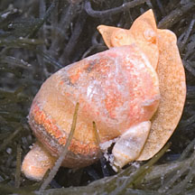

|
|
|
Sap-sucking
slugs
Order Sacoglossa
updated
Jun 2020
Where seen? These slugs come in a wide range of shapes from minute to large, and
some are commonly seen on all our shores. They often closely resemble
the seaweed that they eat! Some are seasonal, being abundant when
their seaweed food is plentiful. And disappearing when their seaweed
food dwindles away.
What are leaf slugs? Sap-sucking
slugs belong to Phylum Mollusca and Class Gastropoda like other snails.
Like many other sea slugs (Subclass Opistobranchia),
sap-sucking slugs lack external shells as adults. Sacoglossans are
also called sap-sucking slugs because this is what they do (see below).
Features: Sap-sucking slugs come
in a wide variety of shapes and sizes. Many are tiny (1cm or less).
They have one pair of 'rolled up' tentacles, not solid tentacles like
other slugs. Some have small external shells, others have internal
shells, while yet others have no shells at all. Those without shells
often have a pair of 'wings' or flaps (called parapodia) that surround the
body. In some, the parapodia can be large and leafy, in others short
and tucked around the long body. Yet others have other structures
on their bodies. They often also take on the same colouration and
even appearance of their seaweed food. Thus they are often overlooked.
Sometimes
confused with other sea slugs that appear similar but belong
to different orders. Here's more on how to tell apart sap-sucking
slugs from other sea slugs. |
| What do they eat? These slugs
suck the sap of seaweeds. They have a distinctive radula with a single
row of sharp, knife-like teeth, used one at a time. A single tooth
is used to pierce the seaweed cell. The 'sap' or contents of the seaweed
cell are then sucked out with a tube that acts as a powerful pump.
Most feed on green seaweeds, each sacoglossan species usually specialising
in a restricted range of seaweed species. Some sacoglossans, however,
eat the eggs of other slugs. The worn out teeth are stored in a sac,
hence the name of the Order. |
|
 Bryopsis slugs are ometimes seen in large numbers on the seaweed that they eat.
Bryopsis slugs are ometimes seen in large numbers on the seaweed that they eat.
Sisters Island, May 12 |
| Stolen food factories: Some of
these slugs retain the seaweed's chloroplasts (the part that contains
chlorophyll). Some sacoglossans that eat red or brown seaweed also
retain alive, the parts of the seaweed that photosynthesise. It was
believed that these chloroplasts continue to carry out photosynthesis
inside the slug and provide the slug with extra nutrients. But recent
studies suggest something more complicated is going on. Some sacoglossans
also recycle the defensive poisons of seaweed into their own secretions
to repel potential predators. |

Smaller 'male' Volvatella slug
with a larger hermaphrodite slug.
Sentosa, Jun 12
|
|

Closer look at the penis.
St. John's Island, May 05 |
Baby Sacoglossa: These slugs are
simultaneous hermaphrodites, that is, each animal has both male and
female reproductive organs at the same time. They practice internal
fertilisation. When two slugs mate, they may both act as males, extending
the penis (usually a white tube that emerges from the side of the
neck). Some may insert the penis into the female genital pore, others
may simply pierce the partner anywhere in the body. They lay eggs
in ribbons.
Status
and threats: None of our sacoglossans are listed among
the endangered animals of Singapore. However, like other creatures
of the intertidal zone, they are affected by human activities such
as reclamation and pollution. Trampling by careless visitors can also
have an impact on local populations. |
| Sap-sucking
slugs on Singapore shores |
Links
References
- Toh Chay Hoon. 29 April 2016. New Singapore record of sea slug Placida cremoniana. Singapore Biodiversity Records 2016: 58
- K. R. Jensen. Sacoglossa (Mollusca: Gastropoda: Heterobranchia) from northern coasts of Singapore. 10 July 2015. The Comprehensive Marine Biodiversity Survey: Johor Straits International Workshop (2012) The Raffles Bulletin of Zoology 2015 Supplement No. 31, Pp. 226-249.
- Kathe
R. Jensen. 30 Dec 2009. Sacoglossa
(Mollusca: Gastropoda: Opisthobranchia) from Singapore. The Raffles Bulletin of Zoology, Supplement 22: 207-223.
- Cornelis (Kees) Swennen. Large Mangrove-dwelling Elysia species in Asia, with descriptions of two new species (Gastropoda: Opistobranchia: Sacoglossa). 28 Feb 2011. The Raffles Bulletin of Zoology 2011 59(1): 29–37
- Tan Siong
Kiat and Henrietta P. M. Woo, 2010 Preliminary
Checklist of The Molluscs of Singapore (pdf), Raffles
Museum of Biodiversity Research, National University of Singapore.
- Debelius,
Helmut, 2001. Nudibranchs
and Sea Snails: Indo-Pacific Field Guide
IKAN-Unterwasserachiv, Frankfurt. 321 pp.
- Wells, Fred
E. and Clayton W. Bryce. 2000. Slugs
of Western Australia: A guide to the species from the Indian to
West Pacific Oceans.
Western Australian Museum. 184 pp.
- Coleman,
Neville. 2001. 1001
Nudibranchs: Catalogue of Indo-Pacific Sea Slugs. Neville
Coleman's Underwater Geographic Pty Ltd, Australia.144pp.
- Humann, Paul
and Ned Deloach. 2010. Reef
Creature Identification: Tropical Pacific New World Publications.
497pp.
- Kuiter, Rudie
H and Helmut Debelius. 2009. World
Atlas of Marine Fauna. IKAN-Unterwasserachiv. 723pp.
- Wee Y.C.
and Peter K. L. Ng. 1994. A First Look at Biodiversity in Singapore.
National Council on the Environment. 163pp.
|
|
|